For Mac and Windows. Source and every release on GitHub.
The film
Lumen in 78 seconds.
Only what Lumen does. Nothing every other browser already has.
What's new in 4.4
Watch Claude work.
Lumen 4.4 shows you every move Claude makes in a tab: its own glowing cursor, a label for what it is doing and a soft edge of light until it is done. 4.4.1 starts you off with one-tap tasks that fit the page, and 4.4.2 runs any finished task again with one tap. 4.4.3 makes passkeys tell you exactly what is going on, with your password or Safari one tap away. 4.6 finishes Lumen in paper and ink, with readable Settings, calm wallpapers and an update card that walks you through each step. Take your settings to another computer with export and import, search the shortcut sheet, and pin, mute or reload every tab right from Cmd K. 4.5.1 made every hover readable and matches the New Tab banner to your background. 4.5 is Maison: a calm monochrome look with warm paper and deep ink, big serif titles, a new logo, buttons that fill with colour that flows in under your pointer, and solid menus with no blur or lag. 4.4.25 fixed the tab preview that could leave ghost copies behind after you hover your tabs, and the What's new intro closes cleanly. 4.4.23 fixed passkeys for real: Sign in with a passkey now works inside frames and sign-in popups, more sites can save one, and a passkey or password Lumen cannot open is never lost. And from 4.4.4, every update plays its own short film again. 4.4.5 flips between Ask and Do it for me with Option Command A, 4.4.6 saves your Shopify orders to Parcels with the right carrier, 4.4.7 makes every page title fit its banner, 4.4.8 tracks a parcel straight from any carrier link, 4.4.9 takes you to the parcel when there is news, 4.4.10 makes that parcel glow all the way round, 4.4.11 copies clean links, with redirects unwrapped and trackers removed, 4.4.12 copies the page with its title as a clickable link, 4.4.13 makes the update card title fit every version in full, 4.4.14 undoes a bulk tab close in one tap, 4.4.15 brings back a window you closed by mistake, 4.4.16 lists everything you closed in History, Recently Closed, 4.4.17 keeps that list across a restart, 4.4.19 lets the command bar search it, 4.4.20 copies all your tab links clean, as titled links, 4.4.21 adds clipboard history on Option V, and 4.4.22 makes Downloads over, with live speed and time left, kind filters and search, and opens History twice as fast. Claude in Lumen arrived in 4.3, and since 4.2 nothing lags.
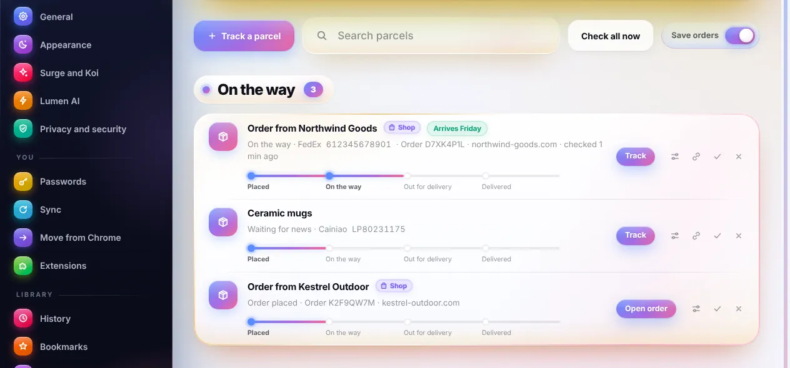
New in 4.4.6: Shop orders in ParcelsNew in 4.4.8: paste a tracking linkNew in 4.4.21: clipboard history on Option V
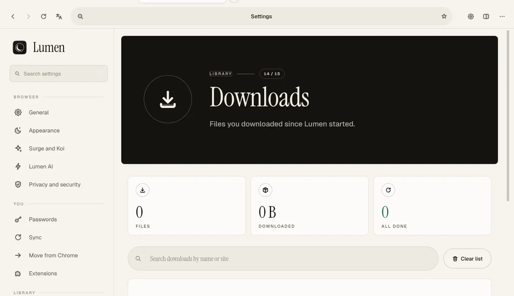
New in 4.4.22: Downloads, made over
01Watch it work
See every move.
When Claude works in a tab, you watch it happen. A glowing Claude cursor glides to every button and field it uses, a small label says what it is doing, and every click sends out a ripple. The tab gets a soft edge of light while Claude is at it and lets go when the task is done. None of it gets in your way.
Claude's own cursor
Clicking and Typing labels
An edge of light while it works
One-tap starter tasks
Claude typing into the page, live
CursorGlides on a spring to the control Claude is about to use
LabelClicking, Typing: always says what is happening
RippleA ring of light on every click Claude makes
EdgeThe tab glows softly until the task is done
IdeasNew in 4.4.1: one-tap tasks that fit the page, like closing a cookie popup or filling in a form
Run againNew in 4.4.2: repeat a finished task with one tap, or edit it and send it off
02Claude in Lumen
Say it. It's done.
Switch the AI panel to Do it for me and tell Claude what you want done in the tab. It reads the page, clicks, types, scrolls, fills in forms and uploads files, and every step shows up live as it goes. It asks before anything that cannot be undone, never types passwords or card numbers, and only uploads files you named. Stop it any time.
Do it for me
Every step shown live
Asks before it sends, buys or posts
Never types your passwords
Do it for me, every step on the record
ReadingFinds the buttons, fields and links on the page
Typing"Lumen 4.3" into the title field
UploadingThe file you named, after you say Allow
Allow this?Publish the video publicly. Allow or Stop here
DoneUploaded and published, every step on the record
03Instant
Ready before you click.
Settings, History, Bookmarks, Downloads and Passwords are preloaded in the background, so they open the moment you ask. Settings sections switch in place with no reload. The AI panel, the find bar and the sidebar glide without making the web page redraw on every frame, so even heavy sites stay smooth. Every animation is still there.
Preloaded pages
Sections switch in place
No redraw while panels glide
Click your tab to go back to the top
SettingsOpens at once, from a page drawn ahead of time
LibraryHistory, Bookmarks, Downloads and Passwords, the same way
Lumen AIConnects and reads the page as the panel opens; Fast answers without a pause to think
AnimationsAll of them kept, now drawn by the GPU instead of redrawing the page
04Speed
Open in a second.
Lumen is ready in about 1 second instead of 4, with no freeze on first launch. Results show up as you type, and clicking, closing and switching tabs, Back and Forward, and menus all answer within about 20 ms.
No first launch freeze
Results as you type
Every click in about 20 ms
1sto openit used to take 4
10msresultsas you type
20msevery clicktabs, menus, Back
05Ask Lumen
Ask any page, with sources.
Every tab gets a chat with streaming answers. Answers quote the page, and clicking a source jumps to the exact passage. Ask about all your open tabs at once, or tell Cmd K what to do, like close all YouTube tabs.
Streaming answers
Sources that jump to the passage
All open tabs
Tab commands in Cmd K
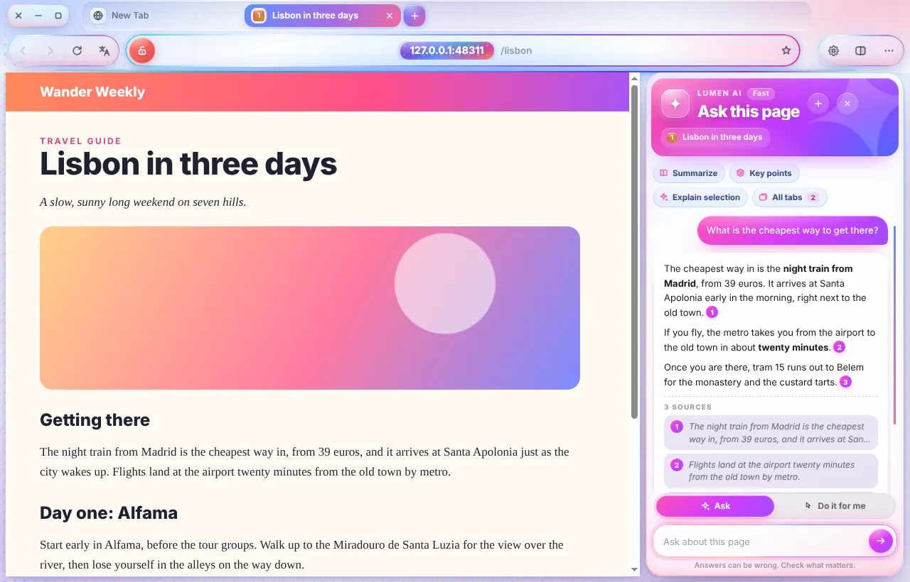
Ask, with sources
Select textA small orb waits at the end of your selection and opens into Explain, Define, Summarize, Translate, Rewrite and Ask, without covering what you read
Any text boxImprove, Make Shorter and Fix Spelling
Your modelsFast, Smart or Best, with a simple three step key setup
Every answerStop, Regenerate and Copy
06Home
A new, modern banner.
Home opens on a clean new banner with a premium clock and a live summary of your day. Prefer the old arrangement? Switch between Modern and Classic layouts in Settings or Customize. Jelly springs are back on every button, tab, menu and card, and every page glides when you scroll.
Premium clock
Modern or Classic layout
A + next to the tab you are on
Lives at getlumen.info
Real logos everywhere
Jelly springs everywhere
Cinematic new intro
The new Home banner
Still new from 4.0 and 4.1
Rebuilt from the first pixel.
01Home
A brand new home.
Every new tab opens on a big hero banner with a sleek clock and a live summary of your day. Search smartly, glance at pulse tiles, drag widgets wherever you like, and let Match theme backgrounds tie it all together.
Sleek clock
Live day summary
Smart search
Pulse tiles
Drag-around widgets
Match theme backgrounds
Follows your light or dark mode.
02Pages
Every page, reborn.
Every Settings and library page has been rebuilt with its own hero banner. Each section gets its own color and animated dots, so you always know where you are.
Settings
History
Appearance
A color for every section
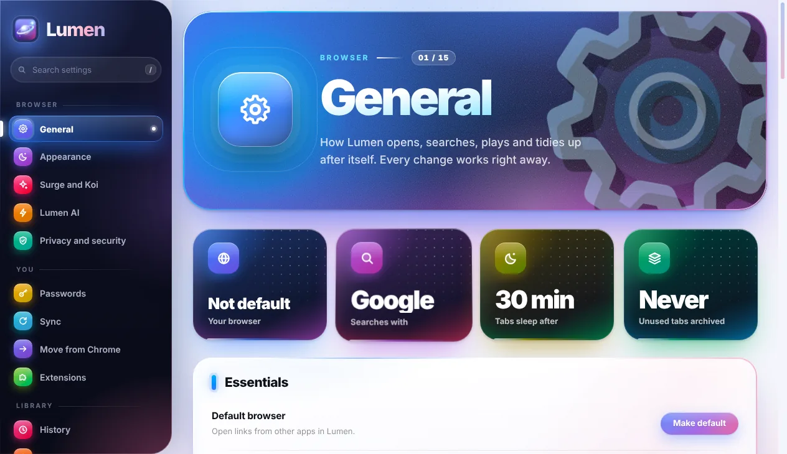
Settings
History
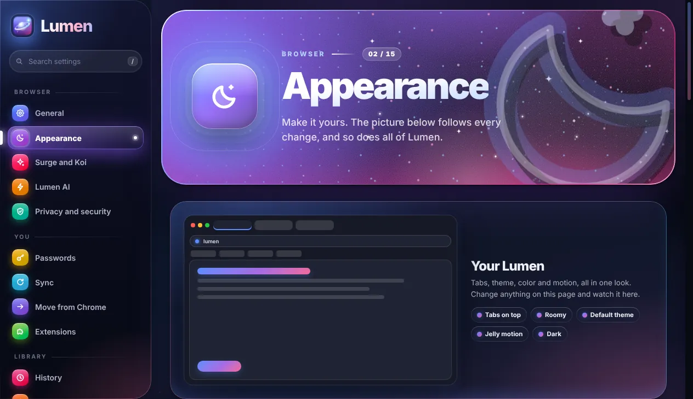
Appearance, in dark
03Command bar
Press Cmd K. Go anywhere.
A brand new command bar, plus right-click menus and dialogs that Lumen draws itself, instead of the plain system ones.
New command bar
Right-click menus
Dialogs
The command bar
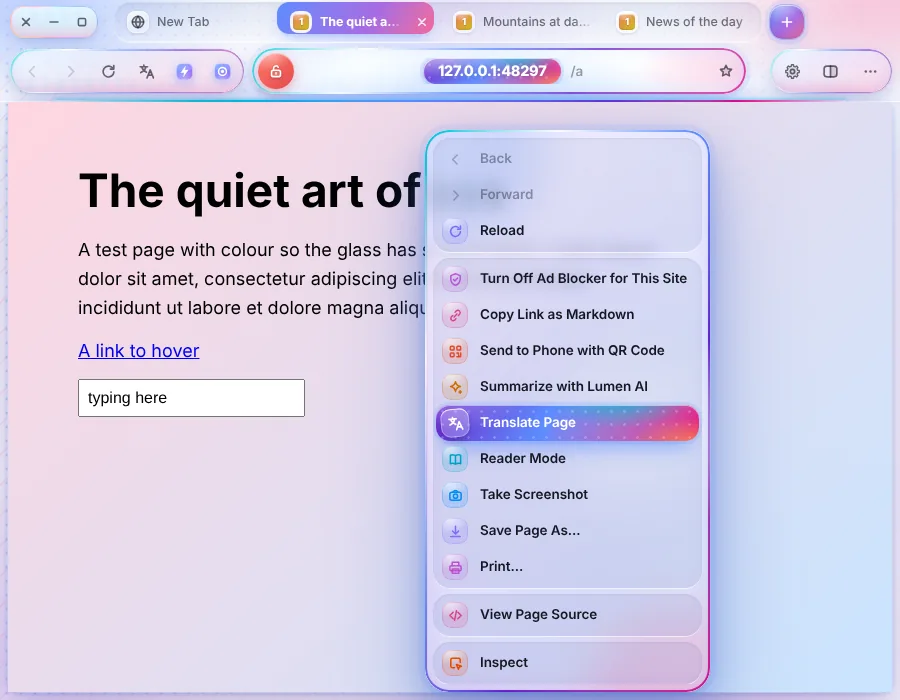
Right-click menu
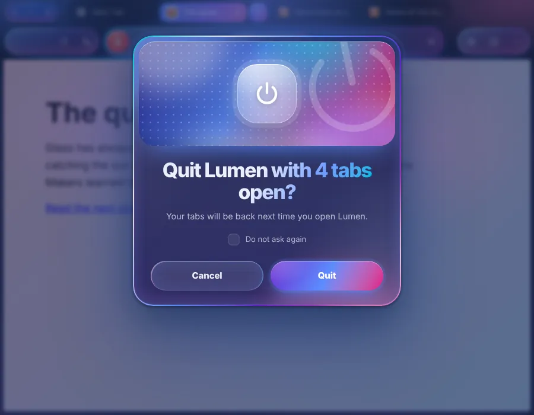
Dialog
04Reader
Reader mode, reborn.
Articles become magazines. Lumen paints cover art from the page's own colors, lays the story out like a magazine, and gives you six themes, a focus spotlight and a reading dock.
Cover art from the page
Magazine layout
Six themes
Focus spotlight
Reading dock
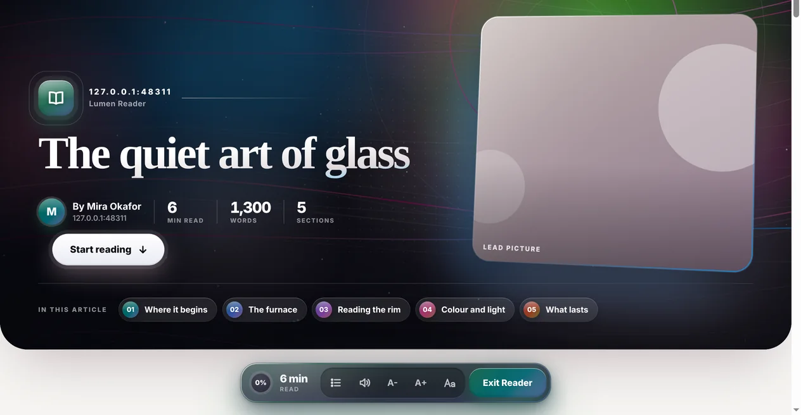
05In the page
Sign in. Read anything.
Password and passkey autofill, strong passwords made for you, and a translate card for pages in other languages.
Password autofill
Passkeys
Strong passwords
Translate card
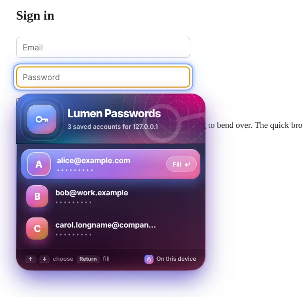
Autofill
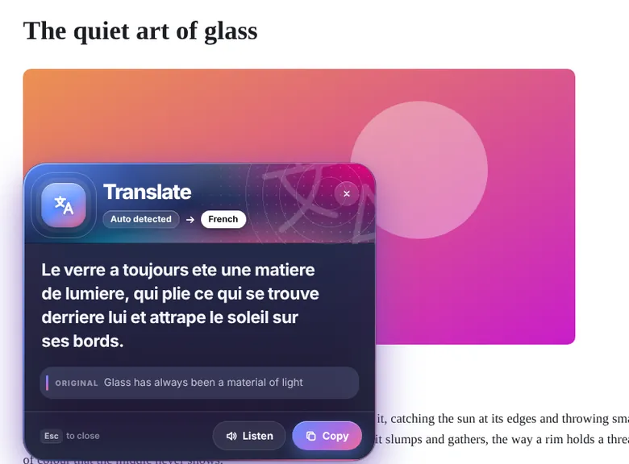
Translate
06Updates
Updates, like a premiere.
Each new version opens with a trailer-style intro. A new update card shows the download as it happens, and a new restart screen carries you into the fresh version.
Trailer-style intro
New update card
New restart screen
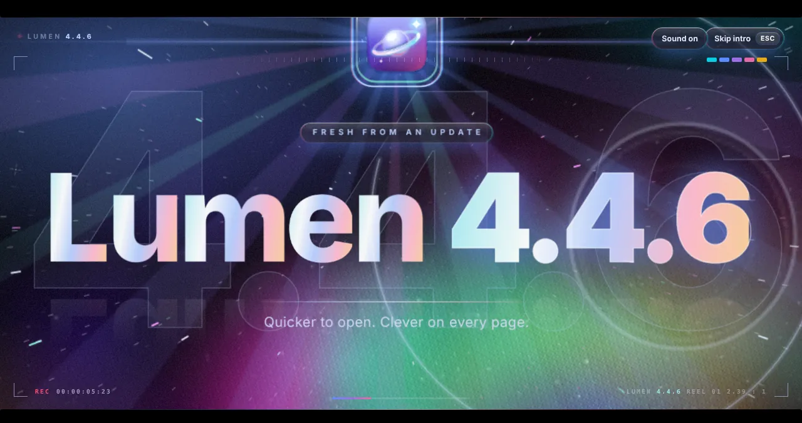
07 Faster and lighter
Lighter than ever.
Lumen 4 does less work. These are results from our own tests.
Cmd T
Opens a new tab instantly.
<0.5%
A new tab at rest went from about 33% CPU to under half a percent, in our tests.
450 MB
About this much less memory, because Surge and Koi now run as their own apps, in our tests.
Smooth
Smooth scrolling all the way through Settings.
Figures are from our own testing and will vary with your machine and the pages you open.
Only in Lumen
Built in. Not bolted on.
The things you would normally add with extensions are simply part of Lumen.
Ads and trackers blocked
Built right in, on every site.
Lumen AI on any page
Ask about whatever page you are on.
Dark mode for every website
Even the sites that never made one.
Parcel tracking
Your deliveries, right in the browser.
Read later
Save a story now, read it when you have time.
The Lumen family
More apps, same magic.
Surge and Koi used to run inside Lumen. In 4.0 they are their own apps, each with its own download, and Lumen gets lighter for it. Grab and Drop join the family too.
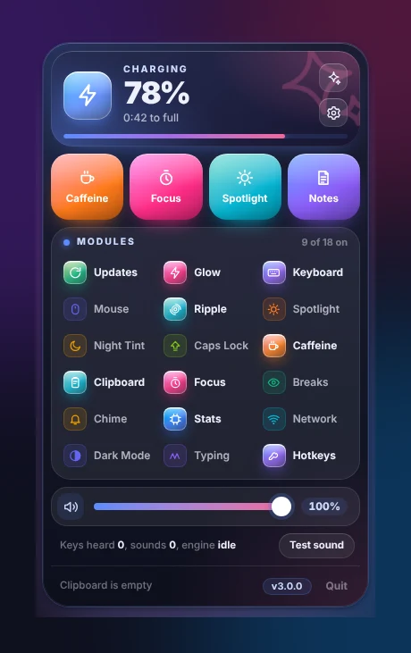
Menu-bar companion
Surge
A companion that lives in your menu bar, with glow, sound and handy tools.
For Apple Silicon Macs. Surge 3.1 updates itself and plays a short What's new film after each update. New in 3.1: Surge goes calm and modern, in warm paper and deep ink with one emerald accent, and Surge Dock now magnifies smoothly with zero lag. Plus a shortcut sheet, settings export and import, Undo for resets and Dock removals, and a clearer update card.
Inside Surge
Small touches, all day long.
Surge sits in your menu bar and adds glow, sound and handy tools to your Mac. Around 20 modules, each one a switch you flip on or off.
01The menu
Everything, one click away.
Open Surge from the menu bar to see your charge at a glance and switch modules on and off. Quick actions for Caffeine, Focus, Spotlight and Notes sit right underneath.
About 20 modules
Focus
Caffeine
Hotkeys
Launchpad
The Surge menu
02Menu bar
A battery icon that flows.
Surge puts a colorful battery in your menu bar. While you charge, light flows through it. It comes in light and dark menu bar versions, as a plain battery or a chip with your percentage.
Flowing while charging
Light and dark menu bars
Battery or percentage chip
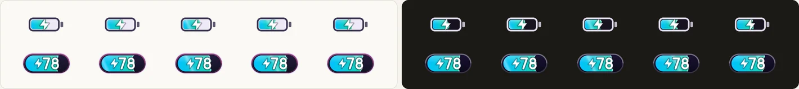
The flow, frame by frame
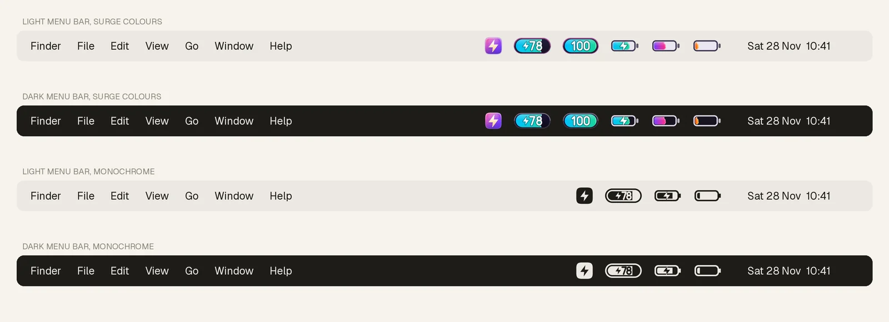
In light and dark menu bars
03Glow and sound
Feel every charge, key and click.
Charge glow
An aurora glows around the edge of your screen when you plug in, a warm sweep plays when you unplug, a red pulse warns of low battery, and it turns gold at 100%.
Sounds
Soft sounds for your keys and clicks, with a volume slider right in the menu.
Ripples
A ripple spreads out from every click, so you always see where it landed.
04Tools
Notes and clips, always handy.
Quick Notes saves as you type, and Command Shift N shows and hides it. Clipboard history keeps what you copied, so you can search it and paste anything again. It is kept in memory only.
Quick Notes
Clipboard history
Search your clipboard
Launchpad
Quick NotesClipboard history
05Updates
Always fresh.
Small glass capsules tell you what just changed, like Caffeine keeping your Mac awake. When a new version is out, Surge downloads it and updates itself.
For Mac. Koi 2.2 updates itself and plays its What's new by itself after each update. New in 2.2: a calmer, sharper Koi in paper and ink with serif titles, buttons that fill as you point at them, a shortcut sheet (press ?), settings backup, Undo, a searchable app picker and a clearer update card.
Inside Koi
Switch apps with a flick.
No more hunting through the Dock. Koi opens instantly, right where your cursor already is.
2.1Cmd Tab
Cmd Tab, with live previews.
Koi 2.2 replaces the Mac app switcher with one that shows a live preview of every window. Hold Cmd and tap Tab, and the selection glides from window to window. A quick tap jumps straight back to the app you really used last.
Live window previews
Smooth gliding selection
Quick tap for your last app
Q to quit, W to close
The new Cmd Tab switcher
01The fan
Your apps, in bloom.
Press your shortcut and your apps spring open around the cursor. Every app has a letter: type it to open that app. Press Return to open the one in the middle, or scroll for more.
Opens under the cursor
Type a letter to open
Scroll for more
The Koi 2.2 tour
02Actions
New window, Hide, Quit.
A row of actions sits right above the fan, so you can open a new window, hide an app or quit it without leaving Koi.
New window
Hide
Quit
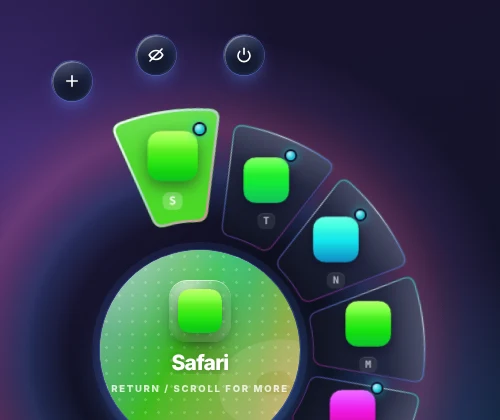
The actions row, above the fan
03Hotkeys
A hotkey for every app.
Pick your own shortcut for opening the fan, then give any app its own hotkey, like Option S for Safari, and jump straight to it from anywhere.
Your own fan shortcut
Custom hotkeys per app
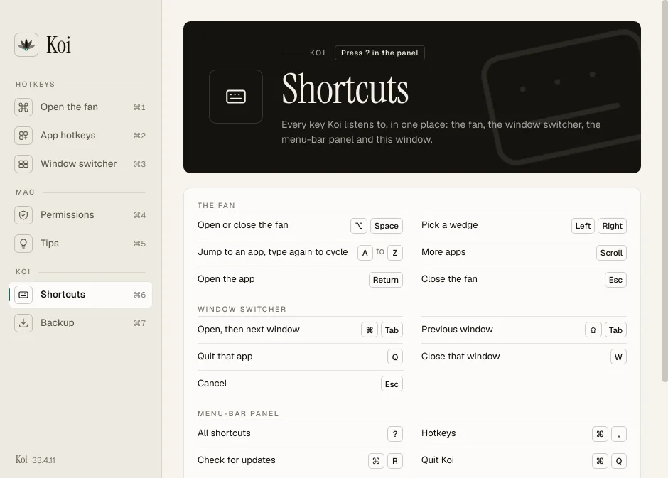
Hotkeys
04Menu bar
Make it yours.
Koi lives in your menu bar. From there, choose a dark or light theme, the size of the fan and how lively the motion feels, and switch on optional glassy sounds.
Dark or light
Four sizes
Soft, Normal or Fast motion
Optional glassy sounds
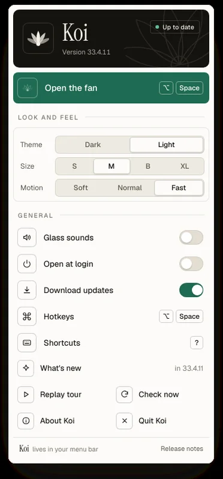
Settings in the menu barAbout Koi
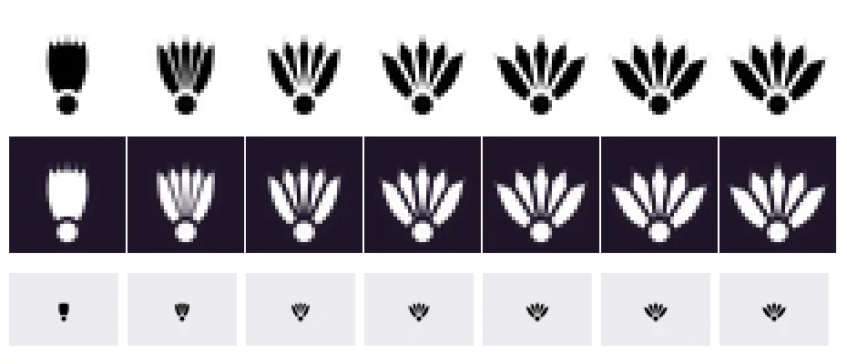
The lotus in your menu bar
05Updates
Updates itself.
When a new version is out, Koi downloads it and updates itself. Nothing to do on your side.
For Apple Silicon Macs and Windows. Grab 2.2 updates itself, shows What's new after each update, and asks for macOS App Management so it can keep your apps up to date. New in 2.2: Right-click any app for everything you can do with it, press ? for shortcuts, drop a download link on the window, and undo, sort, filter and export your settings.
Inside Grab
Get apps the easy way.
No hunting for the right website, no ads dressed up as download buttons. Grab finds the real app and installs it for you.
01Search
Type it, get it.
Search more than 7,000 Mac apps and hit Get. Grab downloads the real app from its developer, checks it and puts it in Applications.
7,000+ Mac apps
One click
Paste a link
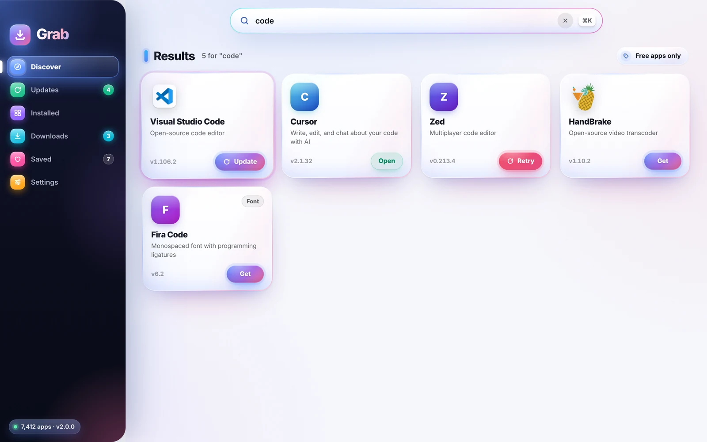
Search results
02Every app
The real thing, every time.
Each app opens in its own panel with its official download address, version and price. Well-known paid apps are labelled, and Buy opens the developer's own site.
Official source
Checksums checked
Honest prices
An app panel
03Your apps
Always up to date.
Grab finds the apps you already have that are out of date. Update them one at a time or all at once.
Finds old versions
Update all
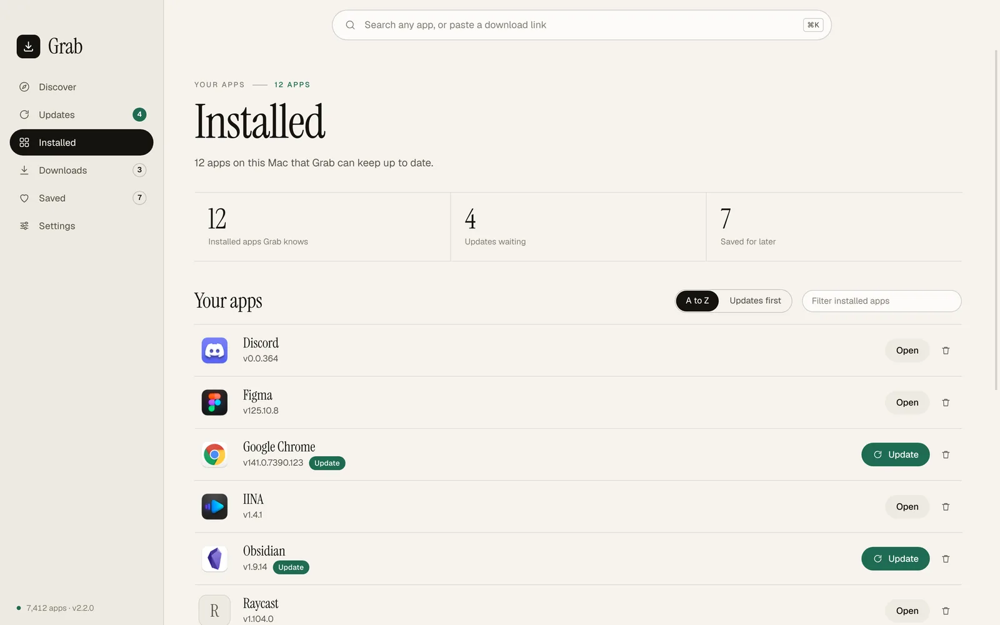
Installed apps
04Grab 2.2
Part of the Lumen family.
Grab 2.2 takes on the family's calm Maison look: warm paper and deep ink, serif titles and one quiet green, with colour that flows into every button. Light, dark or automatic, and it updates itself.
Light and dark
Lumen motion
Updates itself
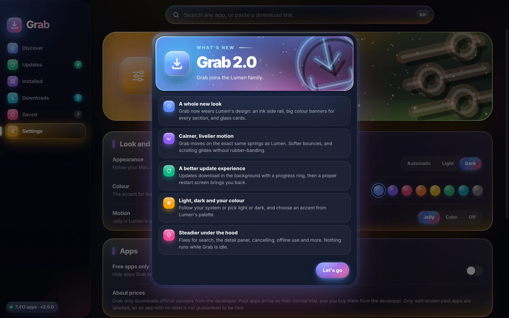
What is new in Grab
Search any app
Type a name and Grab searches a catalog of more than 7,000 Mac apps. Hit Get and you are done.
Straight from the source
Every app comes from the official download, and Grab checks the checksum before it installs. No fake download buttons.
One click installs
Grab downloads the app, opens the DMG or zip and drops the app into Applications for you. No browser needed.
Keeps apps fresh
Grab finds the apps you already have that are out of date. Update them one at a time or all at once.
Paste a link
Paste any direct download link (.dmg, .zip, .pkg, .exe or .msi) and Grab downloads and installs it.
Mac and Windows
On Windows 10 and 11, Grab searches the official winget catalog and installs quietly, with every installer hash checked.
Every store. Every parcel. Discover real products from hundreds of stores, buy in one step, save anything with a price, and follow every delivery from order to doorstep.
For Apple Silicon Macs and Windows. Drop 1.7 updates itself and shows What's new after each update. New in 1.7: a calmer Drop in one quiet colour, Undo when you remove something, keyboard shortcuts for every section, a filter for your Saved, export and import of your data, and a window that opens where you left it.
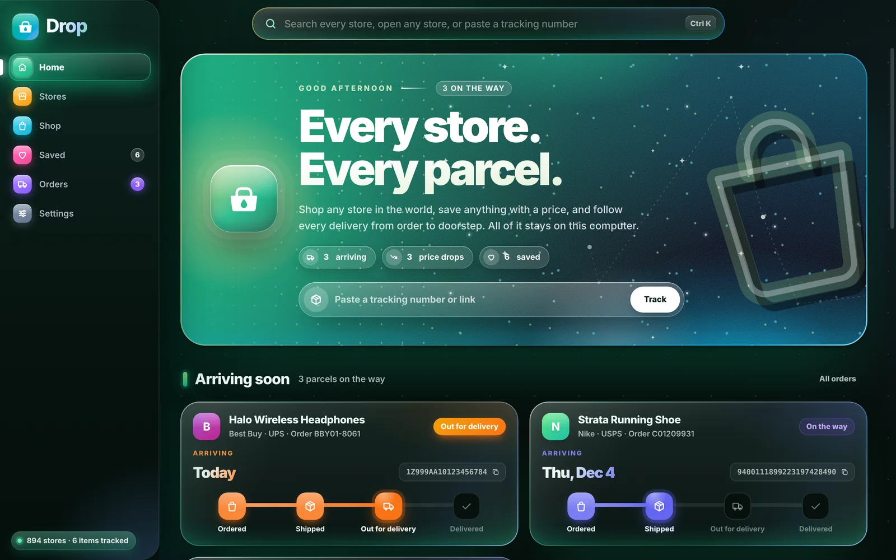
Inside Drop
Shop everywhere, track everything.
One app for every store you buy from and every parcel on its way to you.
01Stores
Every store, one window.
1,687 stores from more than 40 countries in 20 categories, with search, filters and follows. Tap a store and its own page opens right in Drop, with its products, sizes, stock and prices. Pick a size, tap Buy, and the store's checkout opens with it in your cart.
1,687 stores
40+ countries
Native store pages
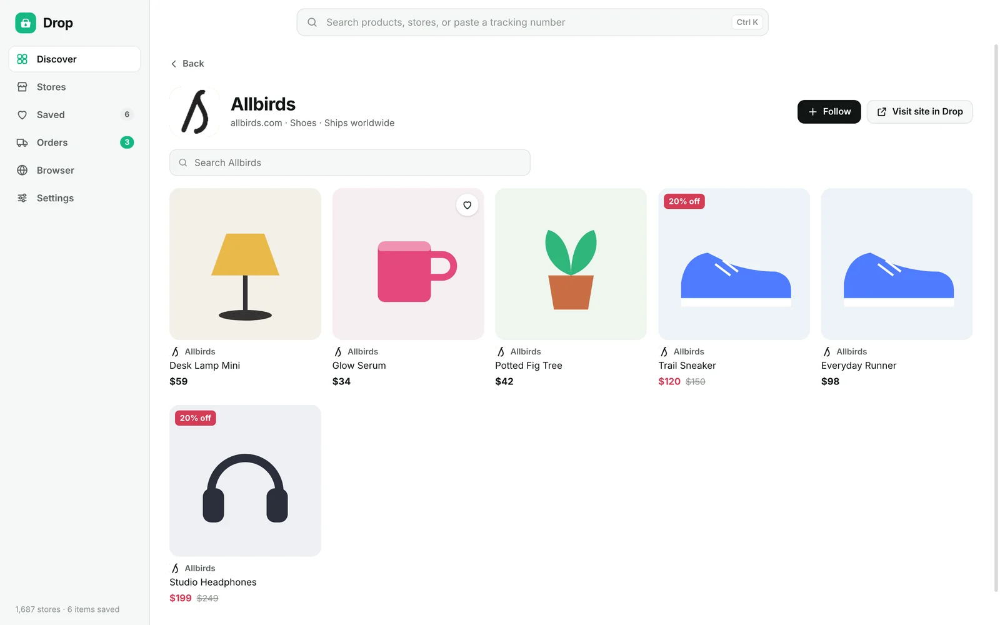
Stores
02Search
One search, every shop.
Products you can buy right in Drop come first, then the web and the stores you pick, as tabs or two side by side.
Every store at once
Side by side
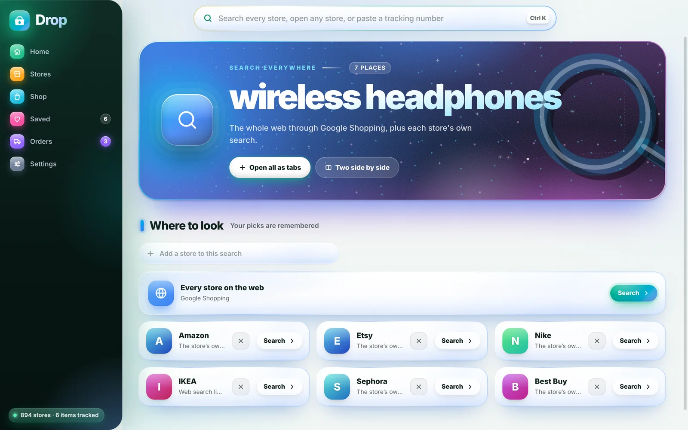
Search everywhere
03Saved
Save it, watch it drop.
Save any product in one click, picture and all. Drop keeps its price history, checks it while it runs and tells you when it gets cheaper or comes back in stock.
Price history
Price drop alerts
Back in stock
Saved and watched
04Orders
Where is my stuff?
Orders land in Drop by themselves when you check out. Paste any tracking number or link from 441 carriers and follow it from ordered to delivered.
Orders find themselves
441 carriers
Delivery alerts
Orders
05Private
Stays on your computer.
No accounts, no servers and no analytics. Drop only talks to the stores and carriers you open, and it updates itself.